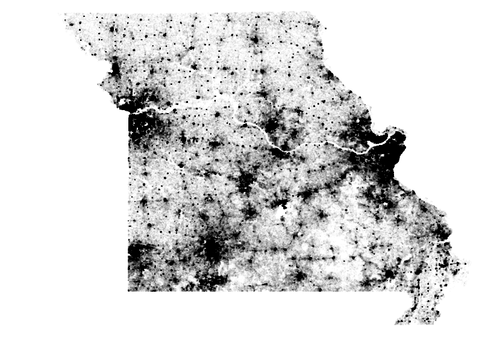
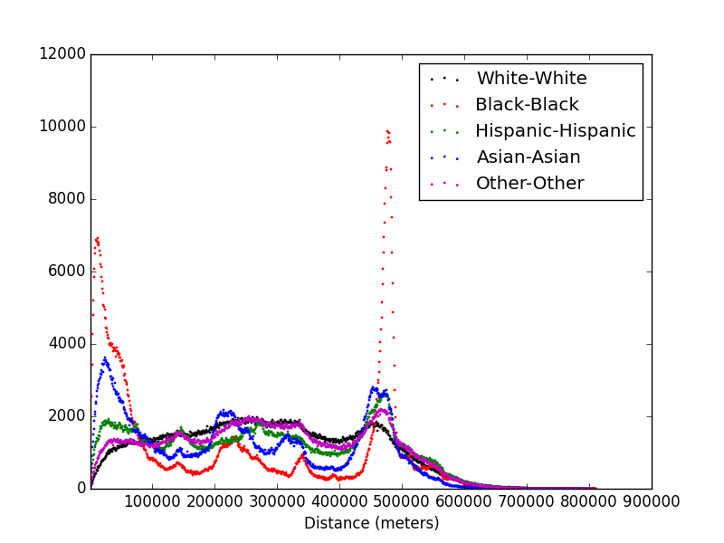

Population Distribution
This is an ongoing project I am working on (purely for fun!) along with my friend Purushottam Dixit. We are looking at the data used in the racial dot map, and seeing if we can come up with a thermodynamic framework to diagnose how the geographical distribution of population depends on race.
The complete data set is around 14GB in size, and our laptops are not equipped to handle such huge files for processing. So as a first step, we extracted the data for the state of Missouri, and analyzed that. The plots below are scatter plots of the population distributions, in which each dot corresponds to one entry, i.e. one person, in the data. The left plot shows the distribution of the white population, whereas the right plot shows the distribution of the black population.
Scatter Plots of the Populations

Immediately, one observes differences in the way these two populations are distributed. The white population has a more spread out distribution, whereas the black population is clustered around urban areas.
This can be further investigated by looking at the distribution of inter-person distances (see the plot below). In this plot, the number of pairs at a certain distance apart from eachother are plotted vs distance. Compare the black and the red plots: the black markers are distances between white-white pairs, and the red markers are distances between black-black pairs.
Distribution of Inter-Person Distances

The two sharp peaks for the black-black curve correspond to the two major cities in the state: Kansas City and St Louis, reaffirming the idea that the black population is clustered around urban areas, as opposed to the white population which is uniformly distributed.
There was a recent paper which suggested a possible mechanism that explains the clustering in the spatial distribution of population.